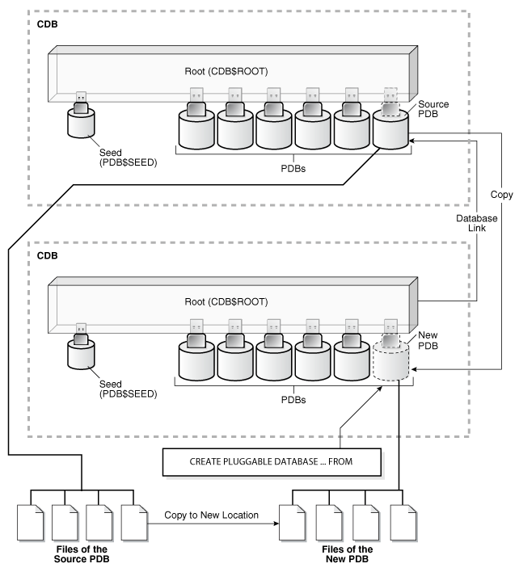
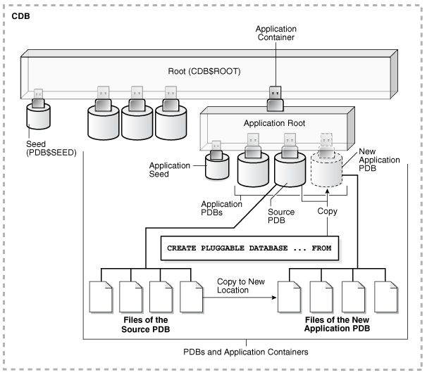

7 Cloning a PDB or Non-CDB
You can create a PDB by cloning a local PDB, a remote PDB, or a non-CDB.
This chapter contains the following topics:
- About Cloning a PDB
To clone a PDB from a source PDB or from a non-CDB, use theCREATE PLUGGABLE DATABASEstatement. - Cloning a Local PDB: Basic Steps
You can clone a local PDB by executingCREATE PLUGGABLE DATABASEand specify the source PDB in theFROMclause. - Cloning a Local PDB: Examples
The following examples clone a local source PDB namedpdb1to a target PDB namedpdb2given different factors. - Cloning a Remote PDB: Basic Steps
You can create a PDB by cloning a remote PDB. After the cloning operation, the source and the target PDB are in different locations. - Cloning a Remote PDB or Non-CDB: Examples
These examples clone a remote PDB or non-CDB given different factors. - After Cloning a PDB
Certain rules regarding users and tablespaces apply after cloning a PDB. - Materializing a Snapshot Copy PDB
You can materialize a snapshot copy PDB by running anALTER PLUGGABLE DATABASEstatement with theMATERIALIZEclause. Materializing a snapshot copy PDB copies all data blocks.
Parent topic: Creating and Removing PDBs and Application Containers
7.1 About Cloning a PDB
To clone a PDB from a source PDB or from a non-CDB, use the CREATE PLUGGABLE DATABASE statement.
This technique clones a source PDB or non-CDB as a new PDB and automatically plugs the clone into the CDB. To use this technique, you must include a FROM clause that specifies the source. The source is the existing PDB or non-CDB that you want to clone. The target PDB is the clone of the source. The source can be any of the following:
-
Local PDB
-
PDB in a remote CDB
-
Non-CDB
The CREATE PLUGGABLE DATABASE statement copies the files associated with the source to a new location and associates the files with the target PDB. When the CDB is in ARCHIVELOG mode and local undo mode, the source PDB can be open in read/write mode and operational during the cloning process. This technique is known as hot cloning.
Note:
If you clone a PDB, and if the source database has encrypted data or a keystore set, then you must provide the keystore password by including the keystore identified bykeystore_password clause in the CREATE PLUGGABLE DATABASE ... FROM SQL statement. You must provide this password even if the source database is using an auto-login software keystore. You can determine whether the source database has encrypted data or a keystore by querying the DBA_ENCRYPTED_COLUMNS data dictionary view.
A typical use for cloning is creation of test PDBs. Cloning enables you to create one or more clones of a PDB or non-CDB and safely test them in isolation. For example, you might test a new or modified application on a cloned PDB before using the application with a production PDB.
This section contains the following topics:
- About Cloning a Local PDB
The simplest form of cloning copies a PDB from a CDB into the same CDB. - About Cloning a Remote PDB
When the source is a PDB is in a remote CDB, you must use a database link to clone the PDB into the local CDB. - About Cloning a Non-CDB
When the source is a non-CDB, you must specify a database link to the non-CDB in theFROMclause. - About Cloning an Application PDB
In all cloning scenarios, when you run theCREATE PLUGGABLE DATABASEstatement in the application root, the cloned PDB is created in the application container. - About Refreshable Clone PDBs
TheCREATE PLUGGABLE DATABASE ... REFRESH MODEstatement clones a source PDB and configures the clone to be refreshable. Refreshing the clone PDB updates it with redo accumulated since the last redo log apply. - About Cloning PDBs from PDB Snapshots
A PDB snapshot is a database-managed, point-in-time copy of a PDB. A snapshot clone PDB is a PDB created from a snapshot. - About Snapshot Copy PDBs
A snapshot copy PDB is a PDB that has been created using aCREATE PLUGGABLE DATABASE ... SNAPSHOT COPYstatement. - About Split Mirror Clone PDBs
In Oracle ASM, a split mirror is the process of detaching a point-in-time media copy from a parent copy. After the split, updates to the parent do not affect the child copy.
See Also:
Oracle Database Advanced Security Guide to learn about cloning a source with encrypted data or a keystore set
Parent topic: Cloning a PDB or Non-CDB
7.1.1 About Cloning a Local PDB
The simplest form of cloning copies a PDB from a CDB into the same CDB.
Note:
You cannot use the FROM clause in the CREATE PLUGGABLE DATABASE statement to create a PDB from the PDB seed (PDB$SEED) or from an application seed.
The following figure illustrates how to clone a local PDB.
Before cloning a PDB, address the questions that apply to cloning a PDB in "Table 5-3". The table describes which CREATE PLUGGABLE DATABASE clauses to specify based on different factors.
Starting in Oracle Database 18c, you can clone a local PDB using DBCA.
See Also:
-
"Creating a PDB from Scratch" to learn how to create a PDB from the seed
Parent topic: About Cloning a PDB
7.1.2 About Cloning a Remote PDB
When the source is a PDB is in a remote CDB, you must use a database link to clone the PDB into the local CDB.
The database link must exist in the local CDB (not the remote CDB). When you issue the CREATE PLUGGABLE DATABASE statement from the root of the local CDB, you must specify a database link to the remote CDB that contains the PDB being cloned in the FROM clause. The database link connects from the local CDB to either to the root of the remote CDB or to the remote source PDB.
The following figure illustrates how this technique creates a new PDB when the source PDB is remote.
Figure 7-2 Creating a PDB by Cloning a Remote PDB
Description of "Figure 7-2 Creating a PDB by Cloning a Remote PDB"
Parent topic: About Cloning a PDB
7.1.3 About Cloning a Non-CDB
When the source is a non-CDB, you must specify a database link to the non-CDB in the FROM clause.
The following figure illustrates how this technique creates a new PDB when the source is a remote non-CDB.
Figure 7-3 Creating a PDB by Cloning a Non-CDB

Description of "Figure 7-3 Creating a PDB by Cloning a Non-CDB"
Parent topic: About Cloning a PDB
7.1.4 About Cloning an Application PDB
In all cloning scenarios, when you run the CREATE PLUGGABLE DATABASE statement in the application root, the cloned PDB is created in the application container.
The application name and version of the source PDB must match the application name and version of the application container.
The following graphic illustrates how this technique creates a new application PDB in an application container by cloning a local source application PDB. The source PDB can also be a PDB plugged into the local CDB root, a PDB plugged into a remote CDB root, or an application PDB plugged into a remote application root.
Figure 7-4 Clone a PDB in an Application Container
Description of "Figure 7-4 Clone a PDB in an Application Container"
See Also:
Parent topic: About Cloning a PDB
7.1.5 About Refreshable Clone PDBs
The CREATE PLUGGABLE DATABASE ... REFRESH MODE statement clones a source PDB and configures the clone to be refreshable. Refreshing the clone PDB updates it with redo accumulated since the last redo log apply.
This section contains the following topics:
- Purpose of Refreshable Clone PDBs
The cloning operation for production PDBs can take a long time. - Automatic and Manual Refresh Modes
You can configure the clone PDB to refresh automatically at set intervals, or you can refresh it manually with theALTER PLUGGABLE DATABASE REFRESHstatement. - Requirements for Refreshable Clone PDBs
Creation of a refreshable clone PDB requires a database link. The database link can point to the same CDB or a different CDB.
Parent topic: About Cloning a PDB
7.1.5.1 Purpose of Refreshable Clone PDBs
The cloning operation for production PDBs can take a long time.
If PDBs are cloned infrequently to avoid a drag on the system, then the clone data becomes stale. A refreshable clone PDB solves this problem. When a refreshable clone is stale, you can quickly refresh it with recent redo. A typical practice is to maintain a “golden master” refreshable clone of a production PDB, and then take snapshot clones of the golden master for development and testing.
You can reverse the roles for source and clone PDBs using an ALTER PLUGGABLE DATABASE ... SWITCHOVER statement. This capability is useful in the following situations:
-
Planned switchover
The CDB hosting the source PDB may experience significantly more overhead than the CDB hosting the clone PDB. To achieve load balancing, you can reverse the roles, making the clone the new source PDB, and the source PDB the new clone.
-
Unplanned switchover
The source PDB may suffer an unplanned failure. In this case, you can make the clone PDB the new source PDB, and resume normal operations.
See Also:
-
Oracle Database SQL Language Reference to learn more about
ALTER PLUGGABLE DATABASE ... SWITCHOVER
Parent topic: About Refreshable Clone PDBs
7.1.5.2 Automatic and Manual Refresh Modes
You can configure the clone PDB to refresh automatically at set intervals, or you can refresh it manually with the ALTER PLUGGABLE DATABASE REFRESH statement.
The REFRESH MODE clause is supported only in a CREATE PLUGGABLE DATABASE ... FROM statement. You can use this clause to specify one of the following options:
-
Specify
REFRESH MODE NONE, the default, to create a PDB that is not refreshable.You can change a refreshable clone PDB into an ordinary PDB by including the
REFRESH MODE NONEclause in anALTER PLUGGABLE DATABASEstatement and then opening the PDB in read/write mode. You cannot change an ordinary PDB into a refreshable clone PDB. After a refreshable clone PDB is converted to an ordinary PDB, you cannot change it back into a refreshable clone PDB. -
Specify
REFRESH MODE MANUALto create a refreshable PDB that must be refreshed manually. -
Specify
REFRESH MODE EVERY number_of_minutes MINUTESto create a refreshable PDB that is refreshed automatically after the specified number of minutes has passed. A refreshable PDB that uses automatic refresh can also be refreshed manually.
Note:
-
When you create a refreshable PDB, you can set the
REMOTE_RECOVERY_FILE_DESTinitialization parameter in the PDB. This initialization parameter specifies a directory from which to read archive log files during refresh operations if the source PDB is not available over its database link. -
If new data files are created in the source PDB, then the
PDB_FILE_NAME_CONVERTinitialization parameter must be set in the CDB to convert the data file paths from the source PDB to the clone PDB.
Example 7-1 A REFRESH MODE Clause That Specifies Automatic Refresh
This refresh mode clause specifies that a refreshable PDB is refreshed automatically every two hours (120 minutes):
REFRESH MODE EVERY 120 MINUTESSee Also:
Parent topic: About Refreshable Clone PDBs
7.1.5.3 Requirements for Refreshable Clone PDBs
Creation of a refreshable clone PDB requires a database link. The database link can point to the same CDB or a different CDB.
A refreshable clone PDB must be in either of the following states:
-
Closed
A refreshable PDB must be closed when a refresh is performed. If it is not closed when automatic refresh is attempted, then the refresh is deferred until the next scheduled refresh. If it is not closed when a user attempts to perform manual refresh, then an error is reported.
-
Open in read-only mode
The refreshable PDB must be kept in read-only mode to prevent out-of-sync changes on the refreshable PDB which do not occur on the source PDB. The refreshable PDB is intended to serve as a clone master and as such must accurately reflect the source PDB at the refreshed point in time.
Parent topic: About Refreshable Clone PDBs
7.1.6 About Cloning PDBs from PDB Snapshots
A PDB snapshot is a database-managed, point-in-time copy of a PDB. A snapshot clone PDB is a PDB created from a snapshot.
Starting in Oracle Database 19c, the behavior of PDB snapshots depends on the setting of the CLONEDB initialization parameter:
-
CLONEDB=TRUEYou can take snapshots of PDBs that are in read/write mode or read-only mode. The first snapshot of the PDB contains full copies of the original PDB files, but subsequent snapshots of the same PDB contain sparse files.
-
CLONEDB=FALSEYou can only take snapshots of read-only PDBs. Every snapshot is a full copy of the source PDB files. In this case, if you create a clone PDB based on a PDB snapshot, then the source PDB must remain read-only for the lifetime of the clone PDB.
Note:
See Oracle Database Licensing Information User Manual for details on which features are supported for different editions and services.
PDB Snapshot Carousel
A PDB snapshot carousel is a library of up to 8 snapshots. The carousel enables you to perform a “hot clone” of a PDB to a specific SCN or point in time. A use case is to restore a snapshot from the carousel, typically the most recent snapshot, and then recover it to the required SCN or timestamp.
Cloning a PDB from a PDB Snapshot
The USING SNAPSHOT clause of the CREATE PLUGGABLE DATABASE statement creates an active PDB from an existing PDB snapshot. To view the available PDB snapshots, query the DBA_PDB_SNAPSHOTS data dictionary view.
To clone a PDB from a snapshot, specify one of the following values in the USING SNAPSHOT clause:
-
The PDB snapshot name
-
The PDB snapshot SCN in the following form:
USING SNAPSHOT AT SCN scn -
The PDB snapshot timestamp in the following form:
USING SNAPSHOT AT TIME timestamp
If the PDB snapshot is a sparse copy (that is, it was created when CLONEDB=TRUE and was not the first snapshot taken of the source PDB), then the PDB cloned from this snapshot is also sparse.
See Also:
-
Oracle Database SQL Language Reference for the syntax and semantics of the
USING SNAPSHOTclause -
Oracle Database Licensing Information User Manual for details on which features are supported for different editions and services
Parent topic: About Cloning a PDB
7.1.7 About Snapshot Copy PDBs
A snapshot copy PDB is a PDB that has been created using a CREATE PLUGGABLE DATABASE ... SNAPSHOT COPY statement.
This section contains the following topics:
- How a Snapshot Copy PDB Differs from a Standard Clone
A snapshot copy PDB and a PDB snapshot created with theUSING SNAPSHOTclause are distinct types of snapshots. - Storage Requirements for Snapshot Copy PDBs
When you specify theSNAPSHOT COPYclause inCREATE PLUGGABLE DATABASE ... FROM sourcepdb, all data files of the source PDB must reside in the same storage type.
Parent topic: About Cloning a PDB
7.1.7.1 How a Snapshot Copy PDB Differs from a Standard Clone
A snapshot copy PDB and a PDB snapshot created with the USING SNAPSHOT clause are distinct types of snapshots.
A snapshot copy PDB does not include a complete copy of the source data files. Rather, Oracle Database creates a storage-level snapshot of the underlying file system, and then creates the clone PDB from the snapshot.
Unlike a standard clone PDB, the snapshot copy PDB is dependent on the storage snapshot. Therefore, you cannot unplug this PDB from the CDB root or plug it in to an application root. Also, you cannot drop the storage snapshot on which the PDB is based. Instead, you must materialize the snapshot copy PDB, which converts it into a full PDB with non-sparse files.
In contrast, the USING SNAPSHOT clause creates a standalone PDB that does not need to be materialized. Note that you cannot create a snapshot copy PDB that is based on a PDB snapshot by including both the USING SNAPSHOT clause and the SNAPSHOT COPY clause. However, you can create a standalone clone PDB with USING SNAPSHOT, and then create a SNAPSHOT COPY PDB from the standalone PDB.
Parent topic: About Snapshot Copy PDBs
7.1.7.2 Storage Requirements for Snapshot Copy PDBs
When you specify the SNAPSHOT COPY clause in CREATE PLUGGABLE DATABASE ... FROM sourcepdb, all data files of the source PDB must reside in the same storage type.
Storage requirements depend on the setting of the CLONEDB initialization parameter:
-
CLONEDB=FALSEThe underlying file system for the source PDB files must support storage snapshots. Such file systems include Oracle Automatic Storage Management Cluster File System (Oracle ACFS) and Direct NFS Client storage. Oracle Exadata supports snapshot copy functionality on ASM configured with sparse ASM grid disks.
-
CLONEDB=TRUEThe underlying file system for the source PDB files can be any local file system, network file system (NFS), or clustered file system that has Direct NFS enabled and supports sparse files. Most UNIX systems meet these requirements, including Oracle ACFS and ZFS. However, when
CLONEDB=TRUE, the source PDB must remain in open read-only mode when clones exist.
Direct NFS Client enables an Oracle database to access network attached storage (NAS) devices directly, rather than using the operating system kernel NFS client. If the files of the source PDB are stored on Direct NFS Client storage, then the following additional requirements must be met:
-
The source PDB files must be located on an NFS volume.
-
Storage credentials must be stored in a Transparent Data Encryption keystore.
-
The storage user must have the privileges required to create and destroy snapshots on the volume that hosts the files of the source PDB.
-
Credentials must be stored in the keystore using an
ADMINISTER KEY MANAGEMENT ADD SECRETSQL statement.The following example configures an Oracle Database secret in a software keystore:
ADMINISTER KEY MANAGEMENT ADD SECRET 'secret' FOR CLIENT 'client_name' USING TAG 'storage_user' IDENTIFIED BY keystore_password WITH BACKUP;Run this statement to add a separate entry for each storage server in the configuration. In the previous example, the following values must be specified:
-
secretis the storage password. -
client_nameis the storage server. On a Linux or UNIX platform, it is the name entered in /etc/hosts or the IP address of the storage server. -
tagis the user name passed to the storage server. -
keystore_passwordis the password for the keystore.
-
You cannot unplug PDB clones created using the SNAPSHOT COPY clause. You can only drop them. Attempting to unplug a clone created using the SNAPSHOT COPY clause results in an error.
Storage clones are named and tagged using the GUID of the target PDB. You can query the CLONETAG column of DBA_PDB_HISTORY view to view clone tags for storage clones.
Note:
Snapshot copy behavior and efficiency are vendor specific and may vary between vendors.
See Also:
-
Oracle Automatic Storage Management Administrator's Guide for more information about Oracle ACFS
-
Oracle Grid Infrastructure Installation and Upgrade Guide for your operating system for information about Direct NFS Client
-
Oracle Database Advanced Security Guide for more information about Transparent Data Encryption
-
My Oracle Support Note 1597027.1 for more information about supported platforms for snapshot cloning of PDBs.
-
Oracle Exadata System Software User's Guide for information about Exadata support for PDB clones created using the
SNAPSHOT COPYclause
Parent topic: About Snapshot Copy PDBs
7.1.8 About Split Mirror Clone PDBs
In Oracle ASM, a split mirror is the process of detaching a point-in-time media copy from a parent copy. After the split, updates to the parent do not affect the child copy.
Starting in Oracle Database 18c, the parent copy can be a PDB rather than a storage volume. The split mirror clone PDB resides on the same media as the parent. The principal use case is to rapidly provision test and development PDBs in an Oracle ASM environment.
Note:
Oracle ASM flex and extended disk groups are required for split mirror clone PDBs.
Mirror refresh is refreshing a split mirror clone PDB with changes from the parent PDB. In effect, this operation is equivalent to deleting the mirror split, and then taking a new mirror split.
The basic procedure for creating a split mirror clone PDB is as follows:
-
Start SQL*Plus, and connect to the CDB root.
-
Prepare the PDB to be cloned by issuing the
ALTER PLUGGABLE DATABASE ... PREPARE MIRROR COPYstatement. -
Create a clone PDB from the parent by issuing the
CREATE PLUGGABLE DATABASE ... USING MIRROR COPYstatement.
To drop a split mirror clone PDB, enter ALTER PLUGGABLE DATABASE ... DROP MIRROR COPY.
The V$ASM_DBCLONE_INFO view shows the relationship between the source PDB, the cloned PDB, and their file groups.
Parent topic: About Cloning a PDB
7.2 Cloning a Local PDB: Basic Steps
You can clone a local PDB by executing CREATE PLUGGABLE DATABASE and specify the source PDB in the FROM clause.
Prerequisites
You must meet the following prerequisites:
-
Complete the prerequisites described in "General Prerequisites for PDB Creation".
-
The current user must have the
CREATE PLUGGABLE DATABASEsystem privilege in both the root and the source PDB. -
The source PDB cannot be closed.
-
If the CDB is not in local undo mode, then the source PDB must be in open read-only mode. This requirement does not apply if the CDB is in local undo mode.
-
If the CDB is not in
ARCHIVELOGmode, then the source PDB must be in open read-only mode. This requirement does not apply if the CDB is inARCHIVELOGmode. -
If you are creating an application PDB, then the application PDB must have the same character set and national character set as the application container.
If the database character set of the CDB is AL32UTF8, then the character set and national character set of the application container can be different from the CDB. However, all application PDBs in an application container must have same character set and national character set, matching that of the application container.
Note:
You can use theREFRESH MODE clause to create a refreshable clone of a local PDB, but only if the database link loops back to the same CDB.
To clone a local PDB:
-
In SQL*Plus, ensure that the current container is the CDB root or an application root.
When the current container is the CDB root, the PDB is created in the CDB. When the current container is an application root, the application PDB is created in the application container.
-
Run the
CREATE PLUGGABLE DATABASEstatement, and specify the source PDB in theFROMclause. Specify other clauses when required.After cloning a local PDB, the source and target PDBs are in the same CDB. The new PDB is in mounted mode, and its status is
NEW. You can view the open mode of a PDB by querying theOPEN_MODEcolumn in theV$PDBSview. You can view the status of a PDB by querying theSTATUScolumn of theCDB_PDBSorDBA_PDBSview.A new default service is created for the PDB. The service has the same name as the PDB and can be used to access the PDB. Oracle Net Services must be configured properly for clients to access this service.
-
Open the new PDB in read/write mode.
You must open the new PDB in read/write mode for Oracle Database to complete the integration of the new PDB into the CDB. An error is returned if you attempt to open the PDB in read-only mode. After the PDB is opened in read/write mode, its status is
NORMAL. -
Back up the new PDB.
A PDB cannot be recovered unless it is backed up.
Note:
If an error is returned during PDB creation, then the PDB being created might be in an UNUSABLE state. You can check the PDB state by querying the CDB_PDBS or DBA_PDBS view. You can learn more about PDB creation errors by checking the alert log. An unusable PDB can only be dropped, and it must be dropped before you can create a PDB with the same name as the unusable PDB.
See Also:
-
"About the Current Container" and "About Container Access in a CDB"
-
Oracle Database Backup and Recovery User’s Guide to learn how to back up a PDB
Parent topic: Cloning a PDB or Non-CDB
7.3 Cloning a Local PDB: Examples
The following examples clone a local source PDB named pdb1 to a target PDB named pdb2 given different factors.
In each example, the root to which the new PDB belongs depends on the current container when the CREATE PLUGGABLE DATABASE statement is run:
-
When the current container is the CDB root, the database creates the PDB in the CDB root.
-
When the current container is an application root in an application container, the database creates an application PDB in the application root.
This section contains the following topics:
- Cloning a Local PDB Using No Clauses: Example
This example shows the simplest way to clone a PDB. - Cloning a Local PDB Using DBCA: Example
This example clones a PDB using the silent mode of DBCA. Hot cloning is supported. - Cloning a Local PDB with the PATH_PREFIX Clause: Example
This example explains how to clone a local PDB with thePATH_PREFIX,FILE_NAME_CONVERT, andSERVICE_NAME_CONVERTclauses. - Cloning a Local PDB Using the STORAGE Clause: Example
This example clones a local PDB using theFILE_NAME_CONVERT,STORAGE, andSERVICE_NAME_CONVERTclauses. - Cloning a Local PDB with the NO DATA Clause: Example
This example clones the data model definition of the PDB, but does not clone the data in the PDB. - Cloning a PDB from a PDB Snapshot: Scenario
This scenario creates a new PDB from a PDB snapshot by executingCREATE PLUGGABLE DATABASE ... USING SNAPSHOT. - Creating a Snapshot Copy PDB: Example
This example uses theSNAPSHOT COPYclause to create a snapshot copy PDB.
Parent topic: Cloning a PDB or Non-CDB
7.3.1 Cloning a Local PDB Using No Clauses: Example
This example shows the simplest way to clone a PDB.
This example assumes the following factors:
-
The
PATH_PREFIXclause is not required. -
The
FILE_NAME_CONVERTclause and theCREATE_FILE_DESTclause are not required.Either Oracle Managed Files is enabled, or the
PDB_FILE_NAME_CONVERTinitialization parameter is set. Therefore, theFILE_NAME_CONVERTclause is not required. The files will be copied to a new location based on the Oracle Managed Files configuration or the initialization parameter setting. -
Storage limits are not required for the PDB. Therefore, the
STORAGEclause is not required. -
There is no file with the same name as the new temp file that will be created in the target location. Therefore, the
TEMPFILE REUSEclause is not required.
The following statement clones the pdb2 PDB from the pdb1 PDB:
CREATE PLUGGABLE DATABASE pdb2 FROM pdb1;
See Also:
-
Oracle Database Administrator’s Guide for more information about Oracle Managed Files
-
Oracle Database Reference for information about the
PDB_FILE_NAME_CONVERTinitialization parameter
Parent topic: Cloning a Local PDB: Examples
7.3.2 Cloning a Local PDB Using DBCA: Example
This example clones a PDB using the silent mode of DBCA. Hot cloning is supported.
This example assumes the following factors:
-
The source CDB is a single-instance database with the SID
orcl. -
The source PDB is
pdb1. You intend forpdb1to remain open during the cloning operation, which means that local undo andARCHIVELOGmode are enabled in the CDB. Otherwise, DBCA closes the PDB during the clone operation, and after receiving confirmation, opens the source PDB in read-only mode. -
The new PDB is
pdb2. -
You are running DBCA in noninteractive mode.
The following command clones the pdb2 PDB from the pdb1 PDB:
./dbca -silent
-createpluggabledatabase
-sourcedb orcl
-createpdbfrom PDB
-pdbName pdb2
-sourcepdb pdb1See Also:
Oracle Database Administrator’s Guide for the DBCA command reference
Parent topic: Cloning a Local PDB: Examples
7.3.3 Cloning a Local PDB with the PATH_PREFIX Clause: Example
This example explains how to clone a local PDB with the PATH_PREFIX, FILE_NAME_CONVERT, and SERVICE_NAME_CONVERT clauses.
This example assumes the following factors:
-
The path prefix must be added to the PDB's directory object paths. Therefore, the
PATH_PREFIXclause is required. In this example, the path prefix /disk2/oracle/pdb2/ is added to the PDB’s directory object paths. -
The
FILE_NAME_CONVERTclause is required to specify the target locations of the copied files. In this example, the files are copied from/disk1/oracle/pdb1to/disk2/oracle/pdb2.The
CREATE_FILE_DESTclause is not used, and neither Oracle Managed Files nor thePDB_FILE_NAME_CONVERTinitialization parameter is used to specify the target locations of the copied files.To view the location of the data files for a PDB, run the query in "Example 19-7".
-
Storage limits are not required for the PDB. Therefore, the
STORAGEclause is not required. -
There is no file with the same name as the new temp file that will be created in the target location. Therefore, the
TEMPFILE REUSEclause is not required. -
The PDB that is being cloned (
pdb1) has two user-defined services:salesrep_caandorders_cafor the sales representatives and order entry personnel in California. The new services will be for the sales representatives and order entry personnel in Oregon, and the service names will be renamed tosalesrep_orandorders_or, respectively, in the cloned PDB (pdb2). -
Future tablespaces created within the PDB will be created with the
NOLOGGINGattribute by default. This feature is available starting with Oracle Database 12c Release 1 (12.1.0.2).
The following statement clones the pdb2 PDB from the pdb1 PDB:
CREATE PLUGGABLE DATABASE pdb2 FROM pdb1
PATH_PREFIX = '/disk2/oracle/pdb2/'
FILE_NAME_CONVERT = ('/disk1/oracle/pdb1/', '/disk2/oracle/pdb2/')
SERVICE_NAME_CONVERT = ('salesrep_ca','salesrep_or','orders_ca','orders_or')
NOLOGGING;
Parent topic: Cloning a Local PDB: Examples
7.3.4 Cloning a Local PDB Using the STORAGE Clause: Example
This example clones a local PDB using the FILE_NAME_CONVERT, STORAGE, and SERVICE_NAME_CONVERT clauses.
This example assumes the following factors:
-
The
PATH_PREFIXclause is not required. -
The
FILE_NAME_CONVERTclause is required to specify the target locations of the copied files. In this example, the files are copied from /disk1/oracle/pdb1 to /disk2/oracle/pdb2.The
CREATE_FILE_DESTclause is not used, and neither Oracle Managed Files nor thePDB_FILE_NAME_CONVERTinitialization parameter is used to specify the target locations of the copied files.To view the location of the data files for a PDB, run the query in Example 19-7.
-
Storage limits must be enforced for the PDB. Therefore, the
STORAGEclause is required. Specifically, all tablespaces that belong to the PDB must not exceed 2 gigabytes. -
The source PDB (
pdb1) has two user-defined services:salesrep_caandorders_cafor the sales representatives and order entry personnel in California. The new services will be for the sales representatives and order entry personnel in Oregon, and the service names will be renamed tosalesrep_orandorders_or, respectively, in the cloned PDB (pdb2). -
There is no file with the same name as the new temp file that will be created in the target location. Therefore, the
TEMPFILE REUSEclause is not required.
The following statement clones the pdb2 PDB from the pdb1 PDB:
CREATE PLUGGABLE DATABASE pdb2 FROM pdb1
FILE_NAME_CONVERT = ('/disk1/oracle/pdb1/', '/disk2/oracle/pdb2/')
STORAGE (MAXSIZE 2G)
SERVICE_NAME_CONVERT = ('salesrep_ca','salesrep_or','orders_ca','orders_or');
Parent topic: Cloning a Local PDB: Examples
7.3.5 Cloning a Local PDB with the NO DATA Clause: Example
This example clones the data model definition of the PDB, but does not clone the data in the PDB.
This example assumes the following factors:
-
The
NO DATAclause is required because the goal is to clone the data model definition of the source PDB without cloning its data. -
The
PATH_PREFIXclause is not required. -
The
FILE_NAME_CONVERTclause and theCREATE_FILE_DESTclause are not required.Either Oracle Managed Files is enabled, or the
PDB_FILE_NAME_CONVERTinitialization parameter is set. Therefore, theFILE_NAME_CONVERTclause is not required. The process copies the files to a new location based on the Oracle Managed Files configuration or the initialization parameter setting. -
Storage limits are not required for the PDB. Therefore, the
STORAGEclause is not required. -
There is no file with the same name as the new temp file that will be created in the target location. Therefore, the
TEMPFILE REUSEclause is not required.
Assume that the source PDB pdb1 has a large amount of data. The following steps illustrate how the clone does not contain the data of the source PDB when the operation is complete:
-
With the source PDB
pdb1as the current container, query a table with a large amount of data:SELECT COUNT(*) FROM tpch.lineitem; COUNT(*) ---------- 60001215The table has over sixty million rows.
-
Clone the source PDB with the
NO DATAclause:CREATE PLUGGABLE DATABASE pdb2 FROM pdb1 NO DATA; -
Open the cloned PDB:
ALTER PLUGGABLE DATABASE pdb2 OPEN; -
With the cloned PDB
pdb2as the current container, query the table that has a large amount of data in the source PDB:SELECT COUNT(*) FROM tpch.lineitem; COUNT(*) ---------- 0The table in the cloned PDB has no rows.
Parent topic: Cloning a Local PDB: Examples
7.3.6 Cloning a PDB from a PDB Snapshot: Scenario
This scenario creates a new PDB from a PDB snapshot by executing CREATE PLUGGABLE DATABASE ... USING SNAPSHOT.
Assumptions
This example assumes the following factors:
-
A PDB snapshot carousel exists with 8 daily snapshots, named after the weekday, day of the month, and time when they were created:
pdb1_mon_2_1201,pdb1_tue_3_1201,pdb1_wed_4_1201, and so on. -
The new PDB will be a clone of a snapshot named
pdb1_wed_4_1201, which is a snapshot ofpdb1taken last Wednesday on the 4th of the month at 12:01 a.m. -
The
PATH_PREFIXclause is not required. -
The
FILE_NAME_CONVERTclause and theCREATE_FILE_DESTclause are not required.Either Oracle Managed Files is enabled, or the
PDB_FILE_NAME_CONVERTinitialization parameter is set. Therefore, theFILE_NAME_CONVERTclause is not required. The files will be copied to a new location based on the Oracle Managed Files configuration or the initialization parameter setting. -
Storage limits are not required for the PDB. Therefore, the
STORAGEclause is not required. -
There is no file with the same name as the new temp file that will be created in the target location. Therefore, the
TEMPFILE REUSEclause is not required.
To clone a PDB from a PDB snapshot:
-
In SQL*Plus, ensure that the current container is the CDB root or an application root.
When the current container is the CDB root, the PDB is created in the CDB. When the current container is an application root, the application PDB is created in the application container.
-
Execute the
CREATE PLUGGABLE DATABASEstatement.The following statement clones the
pdb1_copyPDB from the PDB snapshot namedpdb1_wed_4_1201:CREATE PLUGGABLE DATABASE pdb1_copy FROM pdb1 USING SNAPSHOT pdb1_wed_4_1201;
See Also:
Parent topic: Cloning a Local PDB: Examples
7.3.7 Creating a Snapshot Copy PDB: Example
This example uses the SNAPSHOT COPY clause to create a snapshot copy PDB.
This example assumes the following factors:
-
The new snapshot copy PDB will be created based on a PDB snapshot named
pdb1_snap3, which is a PDB snapshot that is a copy ofpdb1at a specific point in time and SCN. -
The
PATH_PREFIXclause is not required. -
The
FILE_NAME_CONVERTclause and theCREATE_FILE_DESTclause are not required.Either Oracle Managed Files is enabled, or the
PDB_FILE_NAME_CONVERTinitialization parameter is set. Therefore, theFILE_NAME_CONVERTclause is not required. The files will be copied to a new location based on the Oracle Managed Files configuration or the initialization parameter setting. -
Storage limits are not required for the PDB. Therefore, the
STORAGEclause is not required. -
There is no file with the same name as the new temp file that will be created in the target location. Therefore, the
TEMPFILE REUSEclause is not required.
Given the preceding factors, the following statement clones the pdb1_snap_copy PDB from the pdb1_snap3 PDB snapshot:
CREATE PLUGGABLE DATABASE pdb1_snap_copy FROM pdb1 USING SNAPSHOT pdb1_snap3 SNAPSHOT COPY;
After pdb1_snap_copy is created, it is dependent on the pdb1_snap3 PDB snapshot. Therefore, you cannot drop pdb1_snap3 when pdb1_snap_copy exists. However, you can transform pd1_snap_copy from a snapshot copy PDB into a regular PDB by running an ALTER PLUGGABLE DATABASE ... MATERIALIZE statement. Materializing the PDB means that pdb1_snap_copy no longer depends on pdb1_snap3, enabling you to drop pdb1_snap3.
See Also:
"Materializing a Snapshot Copy PDB"Parent topic: Cloning a Local PDB: Examples
7.4 Cloning a Remote PDB: Basic Steps
You can create a PDB by cloning a remote PDB. After the cloning operation, the source and the target PDB are in different locations.
General Prerequisites
The following prerequisites must be met:
-
Complete the prerequisites described in "General Prerequisites for PDB Creation".
-
The current user must have the
CREATE PLUGGABLE DATABASEsystem privilege in the root of the CDB that will contain the target PDB. -
The source and target platforms must meet the following requirements:
-
They must have the same endianness.
-
The database options installed on the source platform must be the same as, or a subset of, the database options installed on the target platform.
-
-
If you are creating an application PDB, then the application name and version of the source PDB must match the application name and version of the target application container.
Prerequisites for Character Sets
-
If the character set of the CDB to which the PDB is being cloned is not AL32UTF8, then the source and target must have compatible character sets and national character sets. If the character set of the CDB to which the PDB is being cloned is AL32UTF8, then this requirement does not apply.
-
If you are creating an application PDB, then the application PDB must have the same character set and national character set as the application container.
If the database character set of the CDB is AL32UTF8, then the character set and national character set of the application container can different from the CDB. However, all application PDBs in an application container must have same character set and national character set, matching that of the application container.
Prerequisites for the Open Mode of the Source PDB
-
The source PDB must not be closed.
-
If the remote CDB is not in local undo mode, then the source PDB must be open in read-only mode.
See "About the CDB Undo Mode".
-
If the remote CDB is not in
ARCHIVELOGmode, then the source PDB must be open in read-only mode. -
If you are creating a refreshable PDB, then the source PDB must be in
ARCHIVELOGmode and local undo mode.
Prerequisites for the Database Link
The following prerequisites must be met:
-
A database link must enable a connection from the CDB to which the PDB is being cloned to the source PDB’s CDB. The database link can connect to either the root of the CDB, to an application PDB if the source is an application PDB, or to the PDB.
-
The user that the database link connects with must have the
CREATE PLUGGABLE DATABASEsystem privilege. -
If the database link connects to the root in the CDB of the source PDB, then the user that the database link connects with must be a common user.
-
In an Oracle Data Guard environment, if you are performing a remote clone of a PDB into a primary CDB, then on the standby CDB set the
STANDBY_PDB_SOURCE_FILE_DBLINKinitialization parameter. This parameter specifies the name of the database link used inCREATE PLUGGABLE DATABASE ... FROM dblink. The standby CDB attempts to copy the data files from the source PDB referenced in the database link, but only if the source PDB is open in read-only mode. Otherwise, you must copy data files to the Oracle Managed Files location on the standby CDB.
To clone a remote PDB:
-
In SQL*Plus, ensure that the current container is the root of the target CDB or the application root of the target application container.
-
Run the
CREATE PLUGGABLE DATABASEstatement, and specify the source PDB in theFROMclause. Specify other clauses when required.After you create the PDB, it is in mounted mode, and its status is
NEW. You can view the open mode of a PDB by querying theOPEN_MODEcolumn in theV$PDBSview. You can view the status of a PDB by querying theSTATUScolumn of theCDB_PDBSorDBA_PDBSview.A new default service is created for the PDB. The service has the same name as the PDB and can be used to access the PDB. Oracle Net Services must be configured properly for clients to access this service.
Note:
If an error is returned during PDB creation, then the PDB being created might be in an
UNUSABLEstate. You can check the PDB state by querying theCDB_PDBSorDBA_PDBSview, and you can learn more about PDB creation errors by checking the alert log. An unusable PDB can only be dropped, and it must be dropped before a PDB with the same name as the unusable PDB can be created. -
Open the new PDB in read/write mode.
You must open the new PDB in read/write mode for Oracle Database to complete the integration of the new PDB into the CDB. An error is returned if you attempt to open the PDB in read-only mode. After the PDB is opened in read/write mode, its status is
NORMAL. -
Back up the PDB.
A PDB cannot be recovered unless it is backed up.
See Also:
-
Oracle Database Backup and Recovery User’s Guide for information about backing up a PDB
-
Oracle Data Guard Concepts and Administration to learn more about plugging in a PDB in an Oracle Data Guard environment
-
Oracle Database Globalization Support Guide to learn about the requirements for the compatibility of character sets
-
Oracle Database Reference for information about the
PDB_FILE_NAME_CONVERTinitialization parameter
Parent topic: Cloning a PDB or Non-CDB
7.5 Cloning a Remote PDB or Non-CDB: Examples
These examples clone a remote PDB or non-CDB given different factors.
In each example, the root to which the new PDB belongs depends on the current container when the CREATE PLUGGABLE DATABASE statement is run:
-
When the current container is the CDB root, the new PDB is created in the CDB root.
-
When the current container is an application root in an application container, the new PDB is created as an application PDB in the application root.
This section contains the following topics:
- Cloning a Remote PDB Using No Clauses: Example
This example clones a remote source PDB namedpdb1to a target PDB namedpdb2given different factors. - Cloning a Remote Non-CDB: Example
This example creates a new PDB by cloning a remote source non-CDB namedmydbto a target PDB namedpdb2given different factors. - Creating a Refreshable Clone: Example
This example clones the remotepdb1to the targetpdb2given different factors.
Parent topic: Cloning a PDB or Non-CDB
7.5.1 Cloning a Remote PDB Using No Clauses: Example
This example clones a remote source PDB named pdb1 to a target PDB named pdb2 given different factors.
This example assumes the following factors:
-
The database link name to the remote PDB is
pdb1_link. -
The
PATH_PREFIXclause is not required. -
The
FILE_NAME_CONVERTclause and theCREATE_FILE_DESTclause are not required.Either Oracle Managed Files is enabled, or the
PDB_FILE_NAME_CONVERTinitialization parameter is set. The files will be copied to a new location based on the Oracle Managed Files configuration or the initialization parameter setting. -
Storage limits are not required for the PDB. Therefore, the
STORAGEclause is not required. -
There is no file with the same name as the new temp file that will be created in the target location. Therefore, the
TEMPFILE REUSEclause is not required.
The following statement clones the pdb2 PDB from the pdb1 remote PDB:
CREATE PLUGGABLE DATABASE pdb2 FROM pdb1@pdb1_link;
See Also:
-
Oracle Database Administrator’s Guide for more information about Oracle Managed Files
-
Oracle Database Reference for information about the
PDB_FILE_NAME_CONVERTinitialization parameter
Parent topic: Cloning a Remote PDB or Non-CDB: Examples
7.5.2 Cloning a Remote Non-CDB: Example
This example creates a new PDB by cloning a remote source non-CDB named mydb to a target PDB named pdb2 given different factors.
This example assumes the following factors:
-
The database link name to the remote non-CDB is
mydb_link. -
The
PATH_PREFIXclause is not required. -
The
FILE_NAME_CONVERTclause and theCREATE_FILE_DESTclause are not required.Either Oracle Managed Files is enabled, or the
PDB_FILE_NAME_CONVERTinitialization parameter is set. The files will be copied to a new location based on the Oracle Managed Files configuration or the initialization parameter setting. -
Storage limits are not required for the PDB. Therefore, the
STORAGEclause is not required. -
There is no file with the same name as the new temp file that will be created in the target location. Therefore, the
TEMPFILE REUSEclause is not required.
The following statement creates the pdb2 PDB from the remote non-CDB named mydb:
CREATE PLUGGABLE DATABASE pdb2 FROM mydb@mydb_link;
When the source database is a non-CDB, you can substitute NON$CDB for the name of the non-CDB. For example, the following statement is equivalent to the previous example:
CREATE PLUGGABLE DATABASE pdb2 FROM NON$CDB@mydb_link;
See Also:
Oracle Database Administrator’s Guide for more information about Oracle Managed Files
Parent topic: Cloning a Remote PDB or Non-CDB: Examples
7.5.3 Creating a Refreshable Clone: Example
This example clones the remote pdb1 to the target pdb2 given different factors.
The clone is a refreshable copy of the source PDB. You can refresh the cloned PDB to update it with any changes made to the source PDB. This example assumes the following factors:
-
The database link name to the remote PDB is
pdb1_link. -
The
PATH_PREFIXclause is not required. -
The
FILE_NAME_CONVERTclause and theCREATE_FILE_DESTclause are not required.Either Oracle Managed Files is enabled, or the
PDB_FILE_NAME_CONVERTinitialization parameter is set. The files will be copied to a new location based on the Oracle Managed Files configuration or the initialization parameter setting. -
Storage limits are not required for the PDB. Therefore, the
STORAGEclause is not required. -
There is no file with the same name as the new temp file that will be created in the target location. Therefore, the
TEMPFILE REUSEclause is not required. -
The refreshable clone will be refreshed automatically every 60 minutes.
Note:
To create a refreshable PDB, the source PDB must be in ARCHIVELOG mode and local undo mode.
The following statement clones the pdb2 PDB from the pdb1 remote PDB:
CREATE PLUGGABLE DATABASE pdb2 FROM pdb1@pdb1_link REFRESH MODE EVERY 60 MINUTES;
See Also:
-
Oracle Database Administrator’s Guide for more information about Oracle Managed Files
Parent topic: Cloning a Remote PDB or Non-CDB: Examples
7.6 After Cloning a PDB
Certain rules regarding users and tablespaces apply after cloning a PDB.
The following applies after cloning a PDB:
-
Users in the PDB who used the default temporary tablespace of the source non-CDB or PDB use the default temporary tablespace of the cloned PDB. Users who used nondefault temporary tablespaces in the non-CDB or PDB continue to use the same local temporary tablespaces in the cloned PDB.
-
When cloning a remote PDB, user-created common user accounts that existed in the source CDB but not in the target CDB do not have privileges granted commonly. However, if the target CDB has a common user with the same name as a common user in the PDB, then the latter is linked to the former and has the privileges granted to this common user in the target CDB.
If the cloned or plugged-in PDB has a common user account that does not exist in the target CDB, and if this user does not own objects in the PDB, then Oracle Database drops the user during the synchronization step; otherwise, the user account is locked in the target PDB. You have the following options regarding locked accounts:
-
Close the PDB, connect to the root, and create a common user account with the same name. When the PDB is opened in read/write mode, differences in roles and privileges granted commonly to the user account are resolved, and you can unlock the account. Privileges and roles granted locally to the user account remain unchanged during this process.
-
Create a new local user account in the PDB and use Data Pump to export/import the locked user's data into the new local user's schema.
-
Leave the user account locked.
-
Drop the user account.
-
See Also:
-
Oracle Database Concepts for information about common users and local users
-
Oracle Database Security Guide for information about creating a local user
-
Oracle Database Utilities for information about using Oracle Data Pump with a CDB
Parent topic: Cloning a PDB or Non-CDB
7.7 Materializing a Snapshot Copy PDB
You can materialize a snapshot copy PDB by running an ALTER PLUGGABLE DATABASE statement with the MATERIALIZE clause. Materializing a snapshot copy PDB copies all data blocks.
When you create a snapshot copy PDB, it is dependent on the source PDB. Because of this dependency, you cannot drop the source PDB.
Materializing the snapshot copy PDB transforms the snapshot copy PDB, which uses sparse files, into a full PDB, which does not use sparse files. Therefore, it is no longer dependent on the source PDB, which can be dropped.
Note:
A PDB snapshot created with the USING SNAPSHOT clause and a snapshot copy PDB created with the SNAPSHOT COPY clause are two distinct types of snapshots and should not be confused with each other. The USING SNAPSHOT clause creates a full PDB that does not need to be materialized. The SNAPSHOT COPY clause creates a sparse PDB that must be materialized if you want to drop the PDB snapshot on which it is based.
To materialize a PDB snapshot:
-
In SQL*Plus, ensure that the current container is the snapshot copy PDB that is being materialized.
-
Run an
ALTER PLUGGABLE DATABASEstatement with theMATERIALIZEclause.
Example 7-2 Materializing a Snapshot Copy PDB
The following SQL statement materializes a snapshot copy PDB:
ALTER PLUGGABLE DATABASE MATERIALIZE;See Also:
-
"About Snapshot Copy PDBs" for more information about snapshot copy PDBs
Parent topic: Cloning a PDB or Non-CDB